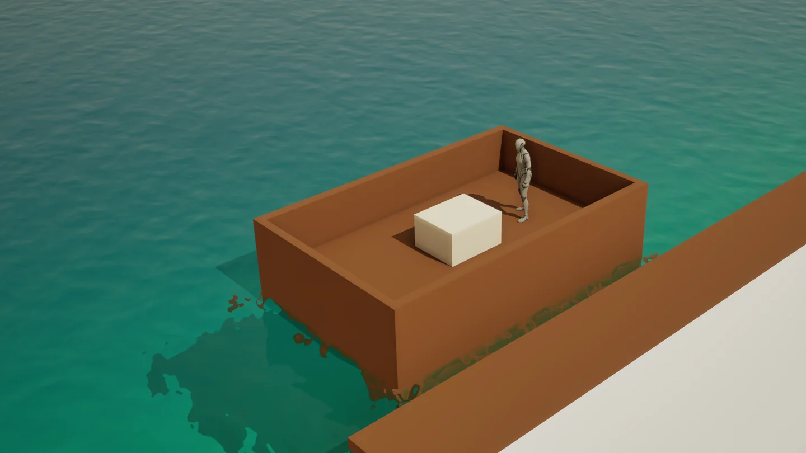
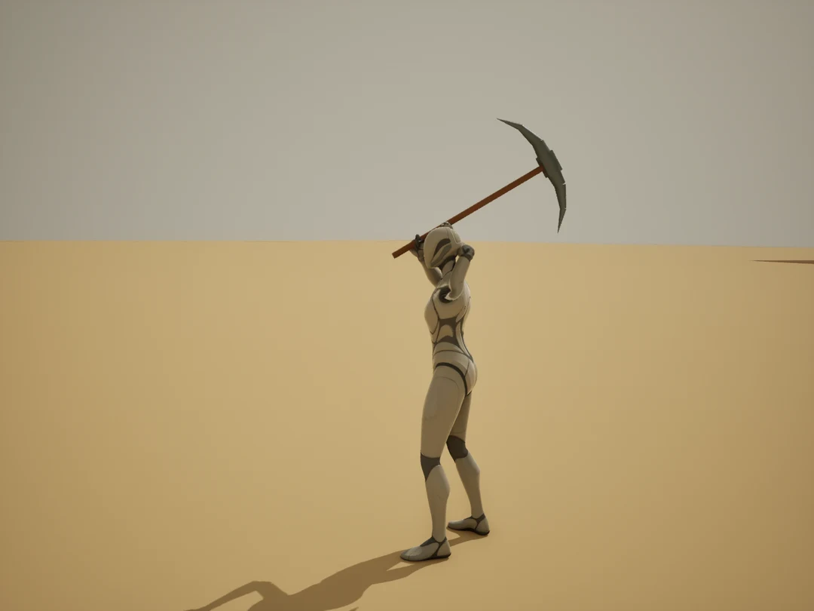

개인 게임 프로젝트 · Unreal Engine 5
피라미드 건설 게임
돌 한 덩이가 건설 재료가 되기까지
석재를 채집해 운반하고 건설 위치에 배치하는 싱글플레이를 먼저 만들고 있습니다. 맨손과 도구를 든 상태를 나누고, 이동에서 채석으로 자연스럽게 이어지는 동작을 정했습니다.
지금 막힌 곳은 3D 애니메이션입니다
곡괭이를 들고 걷다가 내리칠 때 손과 손잡이, 어깨가 함께 움직여야 합니다. 여러 방향에서 자세를 확인하며 작업 중이고, 다음 방법으로 로컬 AI를 활용한 동작 제작과 모션캡처를 검토하고 있습니다.

